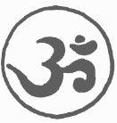

GLOSSARY
A
ajna—the point between the eyebrows; third eye; sixth of the seven chakras; actually located in the midbrain, related to the thalamus.
akasha—ether; subtlest, all-pervading material manifestation.
asana—comfortable posture; seat; third of the eight parts of yoga.
ashram—monastic retreat, usually directed by a guru.
Atman—Soul-Spirit; individualized Brahman.
avatar—(lit. to come from without) an incarnation of the Supreme Lord in human form, e.g., Christ, Krishna, Rama, Zoroastor, Buddha.
avidya—ignorance.
B
ban marg—the left-handed path.
bardo—the state between death and rebirth.
Bhakti Yoga—the yoga of devotion.
bhajan—singing of holy songs; devotional music.
bindu—a lower form of pran.
brahmacharya—(lit. to live in Brahma) sexual continence (a frequent meaning).
Brahman—the absolute one from which all else emanates; Ultimate Reality.
C
chakras—(lit. wheels) psychic energy vortices in the body, associated with the plexuses.
chela—disciple.
chillum—an earthen pipe cylinder used for smoking ganga or chars.
D
Dharma—Universal Law; the Way.
dhyana—meditation; identification with the Divine One.
G
gasho—a bow in reverence to another being with the understanding of the essential Buddha nature in all sentient beings.
gopis—the dancing milkmaids charmed by the cowboy flute player, Lord Krishna.
guru—spiritual guide or preceptor.
H
Hatha Yoga—(ha-sun; tha-moon) work with the body.
hridayam—spiritual heart.
I
ida—subtle nerve on the left side of the shushumna (the kundalini channel within the spine); the lunar nadi. See pingala.
Ista Devata—a personal God (Ishvara) who receives prayers and protects the chela on the Path.
J
japa—repetition of the Name of God, usually with a mala.
Jnana Yoga—the path of knowledge arrived at through reasoning and discrimination.
K
Kargyupa—an ascetic Tibetan Buddhist sect.
karma—(lit. action) the law of cause and effect; the apparent spread of energy through thoughts, words and deeds.
Karma Yoga—realization through action; selfless service (Sat Sewa).
kinhin—walking meditation practiced in Zen Buddhism.
kirtan—repetition in song of the Names of God.
koan—meditation exercise in question or paradox form used in Rinzai Zen practice.
kundalini—energy channeled from the base of the spine; aroused like a serpent by various yoga exercises to light the chakra lamps of consciousness.
L
Love—say the Word and you will be FREE; we do not HAVE love when we ARE love.
lama—teacher.
M
Mahamudra—the union of opposites; the Middle Path; the Great Gesture; the Great Symbol.
Mahayana—the Great Vehicle or High Way of northern Buddhism, Tibetan, Chinese and Japanese.
maithuna—the practice of yab-yum (sexual intercourse in which the woman sits astride the man facing him).
mala—a string of 108 beads and a guru (Meru) bead, used for japa; rosary.
mandala—(lit. a circle) a geometric and psychometric arrangement of lines, forms and colors, used as a vehicle for meditation.
mantra—words, syllables or phrases manifested to effect psychic states by sounding the chakras.
maya—the phenomenal world.
Meru—the mountain in the Center.
mouni—a sadhu who uses silence as an upaya.
moxa—liberation.
mudra—a gesture of the fingers or hands or limbs, used to affect prana.
muhlbandh—the closing of the anal sphincter.
N
Nad Yoga—the yoga of inner sound (from nadi, nerve channel).
nadi—nerve channel.
nirvakalpa samadhi—the highest superconscious, formless state, in which there is no distinction between subject and object.
nirvana—at-one-ment with the all and everything, the everything and no-thing; beyond karma.
Nyingmapa—a Tantric Tibetan Buddhist sect which does not require its members to be monks.
O
ojas—the highest form of pran.
OM(AUM)—the sum total of all energy; the first cause; all-pervading sound.
P
padmasan—the full lotus asana in which the legs are crossed and the feet rest on the thighs.
pandit—a learned man.
pingala—subtle nerve channel on the right side; solar nadi. See ida.
prajna—supreme intuitive wisdom.
pran(a)—life energy.
pranayama—control of prana through control of breathing.
prasad—consecrated food.
R
Ram(a)—solar avatar incarnated in Satya Yuga.
Rimpoche—(lit. Precious One) title accorded high lamas and tulkus.
roshi—a zen guide.
S
sadhak—a spiritual aspirant doing sadhana.
sadhana—a spiritual way, work, or exercise.
sadhu—a full-time worker; a holy man.
samadhi—oneness of mind; undistracted union of subject and object.
samsara—the repetitious cycle of birth-death-rebirth.
sanyasi—a renunciate; a mendicant monk in achre robe.
Sat Chit Ananda—complete Being-Knowledge-Bliss; our true nature; reality.
Satipatthana Vipassana—application of mindfulness.
Satsang (Sangha)—communion or community of Workers on the Way. (Sat Guru - Sat Sang - Sat Seva: pure guide - pure companion - pure service)
Sattvic—pure.
Satya Yuga—the Golden Age of Truth-Purity.
siddhi—occult (hidden) power.
Siva—the dancing destroyer (of ego); e.g., incarnated as Shankara, Bhagavan Ramana Maharishi.
T
Tao—the way and The Way.
Tantra Yoga—the yoga of using the senses to go beyond the senses; often called the Rapid Path.
tapasya—austerity; penance; purification by fire.
tratak—the discipline of gazing at and “grokking” a seed object such as a candle flame, a flower, the Sun.
U
udyanahandh—closing of the upper intestinal door.
upaya—method.
V
vairag—the falling away of worldly desires.
Vajrayana—the Adamantine Way.
Vichara Atma—“Who Am I?”
Vishnu—the Preserver; incarnated as Rama, Krishna, Buddha, Jesus.
Y
yoga—a yoke; union; making straight the Path through which God realizes Himself.
Z
zazen—being in the natural state; ceasing conceptual activity.
zendo—the place where zazen is practiced.

LAMA FOUNDATION: a current note (summer ’72)
Honest experimentation in the evolution of economic, social, and spiritual forms for communities of seekers is exceedingly difficult, and the moments of love and trust and consciousness are interspersed by periods of paranoia and struggle. Through honesty we grow, and the beings who work, pray, and live together at Lama are no exception.
For the integrity of our inner journey and the ecology of the land, the Lama Foundation must at present limit the number and frequency of visitors. We realize the great need for spiritual nourishment at this time of awakening, and while Lama cannot fulfill this need for all those seeking to come physically to the land, we pray that more learning and growing centers will evolve* and that we may all open our hearts to the movement of the spirit.
*for information see:
Spiritual Community Guide, Box 1080, San Rafael, Cal., 94902
Alternative Newsmagazine, P.O. Drawer A, Diamond Hgts, San Francisco Cal., 94131